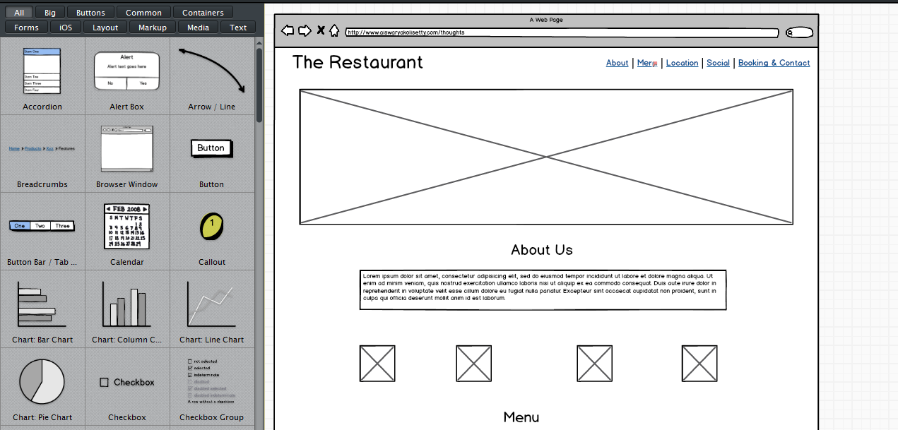
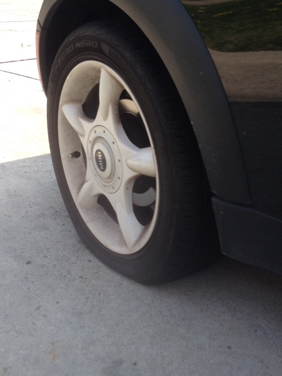
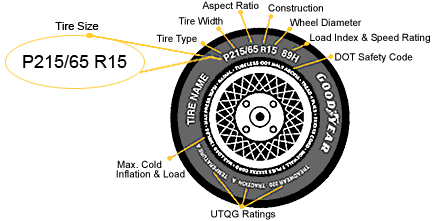
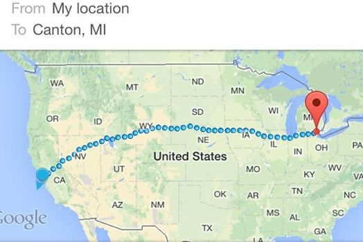
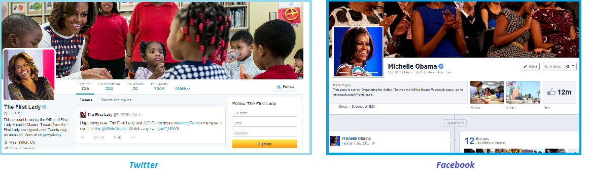
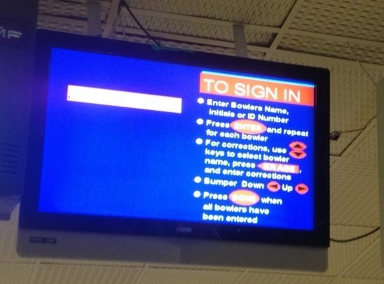
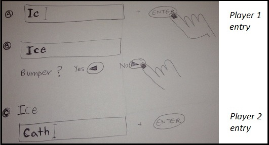

My Thoughts
Describing the lessons I learn, products I try, and feelings I feel. I am trying to improve my writing as well.
An ode to surgeons
February 20 2015
You know how sometimes it's all too easy to web conference into an early morning meeting and be half-listening? It's early, the coffee is still brewing in the house, and the meeting has begun. It's the agenda being called out; it can get easy to zone out. While it might happen for a few minutes, most of the time it's easy to get back into the conversation. Least of all, it's not very dangerous to lose track. This is a meeting notice in the life of an engineer, or business person, or desk worker.
Now, imagine if each of those meetings on your Outlook had a person's name on them. The item doesn't just say "1:1 with [coworker]", rather it says "ankle surgery with [patient's name]." It's a meeting for the next morning. It goes from 7 - 9:30am, followed by post-op, and recovery. Then another meeting notice for 9:50 - 11:30 that states "knee surgery with [patient 2's name]."
So, for a moment imagine if those really were your meetings for tomorrow. How would you feel about the next day? One thing for sure - no time to zone out, no time to be late. These are ankles, knees, and medical teams waiting on you. But more than that, they are patients. One with an ankle, another with a knee. You wake up in the morning and you need to be focused, ready, to do a skillful, tricky job.
The meeting starts with pre-op; as the surgeon, you meet your client and do introductions. You run off to check their charts, history, and get ready for the procedure. You take a bit of time to jump into a fellow physician's surgery to help on a task they need. Get back to get ready. Patient arrives a little while later, sedated and virtually asleep. The operating room is green, cold, with bare tiled walls. You march in, the team is ready and the patient is on the hard bed, waiting and unaware of the work to come.
The work begins. Cutting, then cleaning, then discussing coordination briefly, before doing some more cutting, harvesting, stitching, threading a muscle between two bones, drilling, cleaning, and stitching up. It feels like a carpentry - the rubbery thick flesh, the tight muscles, the hard bones, the drill, the screws, the stitches. Over 2 hours later, the procedure ends. There was no zoning out, there was no time to stop and question. It was doing and it was done.
In essence, that's the difference between a surgeon's meeting notice and yours or my meeting notice. His doesn't leave room for error, for day dreams, for questions, backtracking, or deliberations. His is a calculated art that has to be executed neatly in a time frame. His meeting has a person's future ability to walk at stake. His has a fellow human being sedated, in his hands, fully trusting him and giving their body to him for repair. It isn't their car, or their house, or an essay that needs fixing. It's their life. The surgeon spends his meeting catering to it. There's no zoning out, there's no time to stop and question.
I don't think I'll ever look at a meeting notice the same way again. Because the work of a surgeon begs me to take a look at the work in my day. Am I working hard and giving value to my art, the way he does? Am I putting the passion, skills, artistic touch into my meetings the way he does? There's an intensity that you need. And meeting a surgeon has opened my eyes to workplace intensity.
One shitshow per month
February 20 2015
I'm not sure when my life went from pick-up volleyball and coffee shops to consultations over my visa, career, and health. In the last 12 months, my life and the things around it have forced me to change a lot. I went from skating by to fighting fires.
The time for change couldn't be more perfect. I very well could admit that a year ago, I wasn't growing. I was doing well at work, I had a healthy body, I was independent. But I wasn't being challenged. I became comfortable in my comforts. And something out there finally decided that I had to wake up. I was too young to be living a life with no challenge. Whether I liked it or not, change came and found me.
Let's say in the next few months, new issues surfaced everywhere - in my personal life, career, and intramurals. I started struggling at work because my personal life was taking over my ability to focus. I was stressed about my inability to overcome a challenge on the first try. I was exhausted and scared for what was coming next. It felt like problems were never ending; I couldn't go back to my life of comfort.
It took time from fighting fires to fundamentally shifting my mindset. I learned that I have to prepare myself for anything. I had to become open to life. Go with its flow. At one point, I had a pep-talk that went something like this, "Be ready to deal with one shitshow per month, Aiswarya. Something is bound to come up, and you need to be there to figure out a solution. It might take a week or a month to resolve, it might take research, and it might make you scared, but you need to stay in the game." Because, what else could I do? It was a matter of becoming okay with the fact that things happen! Automatic payments aren't going to take care of everything. Life provides problems in order to make you a better problem solver. Life makes you feel powerless, and when you find a way through it, you attain more power.
In regards to the "one shitshow per month" quota, today I'm trying to find enjoyment in the journey through difficulty. Situations come up so I can explore spaces in myself that I hadn't found. Each challenge is beautiful because it asks that I choose how to face it. I can decide the steps to take and I can decide how to feel about it.
THe journey through difficulty means that I am learning to prioritize. Not everything is perfect and I need to live with that. Sometimes, the lives of others will create challenges for me and I need to live with that. By making it through my difficulty, I can end up a kinder, gentler person to others. For now, I will live with that.
Unpacking fear
February 2 2015
Recently, I learned something about myself that caused me some distress. Distress turned into panic, then worry, then fear. It continues to evolve; some days, I feel determined and I turn that fear into confidence. On other days, I look around trying to find control.
The mind is a powerful place. It's hard to understand that when life is smooth. Bills are being paid, work is calm, and friends are coming over. Everything feels great. You get to focus on other things: do some writing, have a coffee, and read a book.
When that powerful place starts to shake a little bit, you catch it, and quickly fix it. When it shakes more, you chide yourself for putting a Band-Aid on the issue. You’re a little overwhelmed, but you know, you start putting things back in place. It’s a thicker bandage this time but who needs to know? The bandage lasts until it begins to tear. When the tear is complete, you’re in the middle of a mental earthquake. Shit hits the fan. Your bandages are long gone. The aftermath is irreparable in the short run. At this point, there’s no choice but to confront the problem.
So what is the problem? To be honest, it takes time to ask that question, let alone answer it. You were just mastering the art of bandaging, but it started falling apart. So you decide to ask yourself this question. It takes a few days, and slowly, you begin to have conversations with yourself.
These conversations have led to my current place: recognition of fear. My goal is to accept the fear. The overwhelming anxiety, the loss of control, the inability to just read a book and think of nothing else. The fear is propelled by the fact that I can't avoid, I can't postpone, I can't ask someone else to accept these feelings. It's on me to accept.
Acceptance is slow. It started with breaking down. This goes on for days; I'll be doing a chore and the feelings would just hurl into my mind, my face, my throat, my stomach. I was scared, I was nervous; I realized what I'd done. My coping mechanism of breaking down was temporary and took care of that moment. But I had to find a more sustainable way. I had to express my fear and acknowledge it. And so I did: to my family, to my friends, to myself in writing. It helped, but it was not completely sustainable either. I was still reacting to an action. I had to figure out what I was so afraid of, what was causing my fear.
Several conversations and questions later, I reached an answer. It all starts with my attachment to myself. I attached to myself so I’m scared to face something that will discomfort me. I attached to myself so I don’t want to allow myself to get hurt, to feel pain, to fight through something. I am attached to myself so I don’t want to disrupt my comfy lifestyle.
This realization brings me somewhere new - the root of my fear is the inability to let go of my present comfort. But present is different, changing. Every minute I'm not ready to accept that, I lose. I lose at enjoying the present. I actually lose that comfort (now I only have the illusion of it). Attachment is a comparison to the past self. The more I live in my past, the more it will cause me distress.
Today, my next step in unpacking fear is to detach from my attachment. If anything, I plan to only attach to the present and find comfort in that. I will allow my mind to process the present without thinking of what will become of me. I will tell myself that I am like every other human being and I will get my share of challenges. I will survive pain, sadness, and fear that come my way because I know that it is possible. I will depend on myself, but not be attached. I will depend on my physical body and powerful mind to keep me alive. I will only attach to the present. I will be willing to give myself away to a world that I cannot control.
It's Uber, it's the Indian government, and ultimately, it's education.
December 14 2014
There is an uproar over Uber in Delhi. One of their drivers is alleged to have raped a young woman who took his cab to go home late at night. Uber claimed that every driver passed a government background check before being hired. They had not forseen this problem in their India operations. The Indian government used this incident to blame a foreign company for piling another issue into the bucket of social woes. Sadly, I think both parties are at fault. Our country, our companies, and our systems need to make fundamental process changes if they want citizens to feel safe.
Let's start with Uber. A multinational company, now valued at $30 billion (mostly for the data they collect on consumers and drivers), needs to do its research before entering a developing country. Never have the rules of rules of developed nations applied by default. For instance, trusting background checks that were approved by the government? Maybe that works in the West, but in India you are naive if you trust all of those background checks. Most certifications are given out like free candy by officials who need to show their completed quota for the month. Sometimes a bribe is involved. Either way, I can bet you that a lot of middleman companies that conducted the checks probably didn't do much checking at all.
So on Uber's part, the lack of background research on the ground is evident. It is their responsibility to conduct user research, political research, and process research if they want to run a business in the sharing economy of a new country. If they want to contribute to society, they must understand cultural and political norms.
Now let's take a look at the Indian government.
- Number 1: It is not in their job description to play the blame game. Don't turn this debacle solely on Uber. Damaging them as an irresponsible foreign company is not the point. Till this incident, parts of the Delhi governemnt didn't know what Uber was or how it operated.
- Number 2: I recommend they understand Uber and the competitive cab environment to figure out where things went wrong. Uber, with GPS tracking and control over drivers with a smartphone that always stays in the car, is one of the safest services in the carsharing market. Don't blankly criticize the company for failing to do their job. They messed up, yes, but take a minute to understand why. What fell apart in India that hasn't in other parts of the world? There is no coincidence that the issue of rape has already blown up in India over the past year.
- Number 3: As stated earlier, rape has become a contentious issue in India. Women and men are angry that their daughters, wives, and mothers are not safe in big city streets. How did it get to this point? Why is a woman who used a taxi from an app in harm's way? Where in the political and societal structure did the tribal, village, town, city, state, and national governments allow this to slip? I don't think many people have questioned the root of this disgusting social crime. Where are some men getting the idea that it is okay to sexually violate and harm a woman without her consent? Why has this become a widespread disease in our society? Is anyone asking these questions?
We need some fundamental changes in society. How we think, what conversations we have, and how our children manage expectations.
Growing up in America, I was made to take a class in sexual education in 4th and 5th grade. The teacher showed us what happens when boys and girls reach puberty, how women and men make children, and the consent and consequences of having sex. We had an hour per week dedicated to health class. I've noticed that western schools have taken on the responsibility of educating kids on issues that many families might find taboo. In order to produce a more understanding and culturally aware group of kids for the future, the educational system shouldered the responsibility. They are sensitive to the backgrounds of their students, but ensure that students are aware of the responsibilities and consequences of their actions.
Today, America is facing issues around rape as well. However, people are speaking up because they understand the boundary between consentual sex and sexual harrassment. It is made clear through education and it empowers the people.
We don't have such systems in most Indian schools. Kids are brought up in an environment where sex is not discussed in the household. In cases of more open-minded parents, it is most likely brushed over. Facts are stated, questions are unanswered. Kids leave these conversations with confusion and rely on media/entertainment to learn more. This is beside the fact that we are neglecting millions of children who don't get the privilege of this conversation. How do we expect them to find answers?
I have a hypothesis for why health and sex education isn't in the Indian curriculum. I believe it has to do with our history. For hundreds of years, arranged marriages were the norm between young men and women. They were married early, oftentimes in the ages of puberty, and had to figure it out for themselves. The early marriages meant that there was little time to educate students on sex and health. With the onset of early marriage, people discovered things for themselves. (Did this lead to marital rape? That's a story for another day).
Today, times are changing. Women are earning money and are delaying their marriage. They take the time to be with friends, to date, to experiment with their romantic lives, and to make room for finding love. Western culture has shown Indian youth that there is more to life outside of "arranged marriages." Today, arranged marriages are more just a series of dates and "love marriages" are more common. People are exploring their sexuality at an earlier age. While some do it responsibly, not everyone has been taught how to stay safe and ask for consent. As you can imagine, that part of Western culture and education isn't really exposed. They see the face of pop culture and pick up surface-level values from it.
As Indian women feel more empowered, I think they are finding the courage to step forward and speak up if they are harrassed. They earn the same money as men, do similar work, earn a living for themselves, and also expect to be treated as equal, respectable citizens by the law. Slowly, the taboo around rape is lowering its walls and becoming more socially acceptable to discuss in India. I believe this is the perfect opportunity for governments to incorporate health and sex education in schools, convince parents that children must be taught how to act responsibly and safely, and start opening up to sensitive issues. If not for now, when will boys and girls be taught together to respect one another, consent with each other about having sex, and make their own decisions?
Perhaps at that point, we can start having a conversation about the value of background checks. People getting background checks can understand why, and the people they are catering to can trust in some kind of moral system. Everyone is on the same page and they understand the value of communicating what they want.
I understand that sex is a taboo subject in our culture. Pre-marital sex is unspoken in the household. But how long will we keep hiding? The truth is coming out, one horrifying story after another. It is not helping our youth. Women feel unsafe on the streets today and men don't know how to respond. If we want to help the women in our country feel safe, and we want our men to be respected and welcome in society, we must start communicating. Dialogue has to begin in the school, college, and workplace environment. It will be tough and uncomfortable. But in the long run, we will be spreading the meaning of love and pleasure - that it can be safe and enjoyable. Love and sex shouldn't be scary; it's time to start believing that again.
Detroit and entrepreneurship
December 7 2014
This weekend I was in Detroit and it reminded me why this is the startup scene of the Midwest. As I live in a suburb and commute to another for work, it's easy to forget the rebounding city on the side. This weekend I was visiting for my favorite coffee place, an urban crafts fair, and a walk.
The urban crafts fair was in the Masonic Temple. The theatre was majestic on the outside and conference hall inside. The crafts fair was overwhelming. Energy, curiosity, and passion. The young tattooed entrepreneurs sold coffee mugs, handmade woolen scarves, prints of the city, and tshirts labeled "Detroit is the new black."
The young adults of Detroit are very proud of their city. There's a spirit and confidence that comes with being an underdog. This group of people tribute their arts and crafts to those feelings of determination and pride. Slowly but steadily we are lifting ourselves back up.
Below is an aggressive coaster asking our fellow metropolitans to give it a rest :)

The fair helped me realize I want to get back into the startup environment in Detroit. There are companies that hold classes on how to be an effective/scrappy designer or engineer, entrepreneurs holding meetups on their products, design activities and contests too. While I work at a large company, my department works like an early-stage startup - quick iterations, proof-of-concepts, usability tests, and iterations. I can apply a lot of this startup mentality of "get your hands dirty quickly" to my daily work.
I signed up for a Meetup for later this week. Time to slowly ease myself back into a resource-rich startup environment in the D!
23 things I learned by 23
November 30 2014
I've spent a little over the past year in a new place, on my first job, and with new friends. The people I've met in Michigan have taught me lessons that I never imagined to learn in a year. They have supported me, lifted me up, and offered their kindness. In turn, they gave me the opportunity to listen when they had to vent, encourage when they weren't sure, and speak when they needed for advice. Together we are learning to find comfort in discomfort.
I've been mentally collecting samples of I've learned by allowing my friends to help me in my journey and becoming a part of theirs. Here are some things I've come to terms with in my daily life.
- We carry ourselves alone through life. We are born alone and we die alone. Being alone is one of the strongest states of being. If you are comfortable being alone with yourself, you have won half the battle. Definitely there will be people who help along the way (friends or family or strangers), but they are not permanent. It's up to us to learn from them and move on.
- Every conversation with every person has something to teach us. Whether it is knowledge or just a test of our patience. No one is a waste of time.
- What you cannot control, it's better to accept than to analyze. Often we find things about people that don't fit well with us. We talk about them, make fun of them, or penalize their personality. What happened to understanding that every person is different? I've found myself happier when I observe their behavior, recognize what I found annoying, laugh, and embrace them for it.
- People won't change 1) because you want them to change or 2) in the way you want them to. They will change when they realize. Until then, you may have to watch them trip over their own feet. Well, because they tied their shoelaces together and you tried to advise them against it.
- Work on yourself and you don't have to work to accommodate other people. Once you learn what you like, what you want, and what you deserve, people with similar interests will gravitate towards you. Work on yourself and you won't have to work on meeting people that appreciate you and support you.
- All feelings are temporary; good and bad feelings can be equally embraced. Good feelings remind you why you're here. Bad feelings want to teach you something. It's important to observe them, figure out why they are here, and accept or modify. The more you push them away, the the faster and harder they come back. Instead of a "fight-or-flight" mechanism to the body's personal and very real feelings, try to "care-and-learn."
- Showing someone you care could seem like a sign of weakness, but really, it makes you stronger. I tend to be a guarded person when it comes to my feelings. I don't want to intrude on another person's life with my affection. Over the past year, I realized otherwise. I've been around people who care more about others than themselves. They compliment you and shower you with their love. They also tend to be the people who experienced huge personal loss in the past. These people had the courage to survive because of how much they gave to others. In times of difficulty, the world around them came back to help. It doesn't have to be tit-for-tat but it's just how the world works.
- That being said, I think there should be a balance in giving inwardly and outwardly. Care about your own thoughts, ideas, struggles, and happiness the way you'd care about your best friend's. Often we give, give, give to others and don't always give as much to ourself. Or we tend to give, give, give to ourselves and neglect others. The lives of others affect and shape yours. Discover how to care for yourself and use that energy to care for others.
- Be honest. It saves time. This applies to you, your personal relationships, and to your workplace. Albeit sometimes the truth must be delivered as a joke, it goes a long way to get it off your chest. If you can't provide the truth, give space between yourself and the situation. It feels amazing to consistently be yourself in all relationships. No hiding and no faking. It allows your mind to focus on other things.
- Do one thing at a time. This will probably be a lifelong piece of advice from my father. I struggle to single-task. Being on Facebook, Instagram, ThoughtCatalog.com, and a work email at the same time does not work. The email at work takes 20 extra minutes and I forgot why I was even writing it. Now, my goal has been to spend extra attention on one task for smaller amounts of time. It might take longer but atleast my heart went into it.
- Ask yourself how you feel (a.k.a be your own therapist). Appreciate your mind and your body for what they provide and where they hurt. You need to live with you for the rest of your life. The least you could do is touch base with your feelings.
- Be open to possibilities. The people you meet and the opportunities they provide can go a long way. Last week I met a financial advisor because it was a free service at my bank. Now I understand what all of that mail regarding my 401K is about. Take even the small opportunities that come your way.
- Enjoy the moment. This is a tough one, dude. It's easy to always think about all the other things you have to do. Instead, enjoy the flavors of lavender and honey and coffee in your latte. Listen to your fingers tapping on your laptop keyboard. Notice the wrinkles in your friend's eyes when they laugh. Be present and attentive in the moment you're in. It'll be a lot more fun when your mind has some empty space it doesn't need to process.
- Take a minute to understand why you compared yourself to someone else today. It is a challenge to live up to the mantra of "don't compare yourself to others." So don't. I think it's more important to understand why you did it. Does your friend look beautiful in a dress and you look average? Is your coworker a master in web development and you struggle with basics? I've compared myself to others without consideration to my feelings or to their backstory. It's quite possible that your friend picks dresses that suit her after years of trial-and-error, and your coworker spent months of practice on web development. Comparing what you see at face-value doesn't always make sense. Once you take a step back to ask yourself why, it's a step towards not comparing at all.
- Living alone can teach you a lot. The noises of others lessen and yours get louder. You get less caught up in the moment and learn how to within your means. You define how to spend time and money. It's a process (sometimes you overshoot and other times you don't) and the freedom of consistent paychecks is liberating. But take a moment to be thankful, get the excessive spending out of your system, and start being reasonable. It's a learning process.
- Being curious and asking questions can get you ahead in life. If nothing else, ask questions that challenge the status quo. Provide answers where you can, but asking can help others figure out why too.
- Learn how to tend to basic necessities. For example, I got a 10 min maintenance lecture from my coworker the other day. It's probably the best 10 minute lesson I've recieved. My MINI Cooper has scared me in ways that I didn't think would ever get fixed. But it came down to checking the level of oil, coolant, and air in the tires every time I filled gas. It was that simple. Learn how to take care of the items you routinely use and they'll last a lot longer. Now I know more about tires than I ever need.
- Laugh and don't be afraid to tell your own jokes. Ask my friends and they'll tell you how unabashedly I tell mine. Laughter can cure things. I take the risk of offending someone every time, but I count on the fact that it brings joy, relieves stress, makes people feel better, and allows us to appreciate the world around us. A little bit of laughter can go a long way.
- Expectations limit you. Expectations demand that you control the situation to reach the outcome you want. When you begin to let go of expectations for people and experiences, you try new things, appreciate all things equally, and connect to things that felt distant before. That said, setting goals can lead to expectations for your future, but put them aside until it's time to evaluate. Until then, explore, keep your options open, and stay limitless.
- I believe we fall into tough situations to learn something about ourselves. Things that we were never forced to explore or uncover. Let me give you a small example. In the past few years, living in a different country from my family has put me in situations that were usually taken care of by my parents. Living alone now, I am being pulled down to the basic challenges that come with building a home and career for myself. But you know what, being by myself wouldn't have felt as complete and real if it weren't for the challenges. I am facing situations that I took for granted growing up. I believe each one of us faces mental, emotional, or physical challenges in life that no one but we can solve. At some time, we face the unanswered situations that we pushed away for later.
- Family (whether it's 2 parents, a spouse, or just yourself) might feel far away but they will be there when you need it. My parents live thousands of miles away but they are happy to wake up at 2am to talk about challenges I'm facing or what coffee to buy. They help me take care of myself and it feels like they are beside me. A small thank you to technology for making it possible.
- I am more candidly appreciating the accomplishments of others. It feels great to see people close to me achieving their dreams step-by-step. It challenges me to set goals for myself in my professional and personal life. It makes me happy to see them happy.
- Being 23 feels fantastic. I'm becoming open to new experiences, new people that teach me things, new wardrobe styles that make me look like an adult, and new ways to understand myself every day. I think this is also my cue to say goodbye, because 1) this is #23 and 2) Taylor Swift's song 22 just came on into my speakers.
5 things I am thankful for
November 29 2014
- I am thankful for my health and for waking up each morning breathing, talking, walking, and living my normal life. After my knee injury, I have realized that my body isn't as invincible as it may seem. I'm grateful that I can function on my own and I've learned to observe, accept, and pay attention to pain.
- I am thankful for being able to do what I want. On my birthday, I had the freedom to choose how to spend it. It's a privilege that most of the planet cannot afford. Being able to make the choice for what to work on, what to eat, when and where to sleep is an amazing gift. am thankful because this position allows me to use my energy on creative endeavors that I enjoy.
- I am thankful for my family being my support corner. My sister and my parents are my friends. We talk about our happy and frustrating moments in order to work through them. I am grateful for having a peer relationship with them because we learn and appreciate each other every day. My relationship with my family is easy and fun, not work at all. I am thankful for having supportive and understanding people in my corner.
- I am thankful for being surrounded by friends who make me become a better person. Gone are my days of competing on who dresses better or works harder or gets better grades. I'm learning to appreciate the strengths of my friends and learn from them. It's not worthwhile to compare or compete, and I am thankful to be surrounded by people who feel the same way.
- I am thankful that I'm learning to depend on myself. It's a slow and long journey once I realized that I'm the only one here for myself. It's also liberating and happier. Others - parents, friends, mentors - will come and go either physically or mentally. It means that I need to become my own best friend and love my strengths, quirks, and weaknesses the same way I accept another person's. That realization over the past 1 year has helped me navigate life after college. I ask for help when I need it but I am strong and happy to be alone and do things on my own. I'm thankful for my growing maturity.
The Theory of Everthing explained one thing
November 23 2014
There are days when you watch a movie. And there are days when you watch a movie. Yesterday I finally got to watch The Theory of Everything, a biopic on the life of Dr. Stephen Hawking. I think my eyes started tearing up 10 minutes into the film and didn't stop till the credits.
For a man who very early on confirmed with his doctor that his brain would not be affected by ALS, he marched on to prove just that. I thought that was so wonderful about this story. The actors and storyline don't pity the scientist for his disorder. Instead they emphasize that it is an active part of his life but there is a bigger purpose to his life, tougher things to address.
Love
Love comes and goes for all the characters in the story. His wife meets another man, and Stephen too, falls for a woman who decides to devote her life to easing his pain. Along with the love for humans, comes other forms of love devoted to humanity. A love for figuring out where and how time and space originated, a love for servicing a person of his basic needs so that he focus his brilliance on other tasks, and a love for committing to a person you love. These are forms of love that Hollywood doesn't always emphasize. Love in Hollywood tends to stop at lust and passion; love can be devotion to a subject, a possibility, or a personality.
Perserverence
This movie presents a relationship between Stephen and his wife Jane, that transcends the maturity of most relationships I witnessed in life. Jane tends to his needs and desires as though he was her child. Parents have a love for children that is indescribable - it goes past a love for a partner. Parents will do anything to protect and nurture their kids. Jane shows that level of devotion to her husband, a life partner, a man who isn't bound by blood but only by marriage,
We are small
I left this movie with another wave of realization that my life is small. In this big world of 7 billion people, there are humans out there who are pushing the limits of the brain's willpower. My issues, while they may seem huge at the time, can be resolved with patience and hard work. It's imperative that I reserve my brain power to also be thankful for what I have and help others in need.
Help goes around and comes around
November 19 2014
When you offer to - or are tasked to - help someone with a predicament, it doesn't always come back to you right away. But I find it beautiful that somehow one day you will need help, and someone - whether it's them or not - will be there to reciprocate it. What goes around does come around.
This week I got a fast-forward version of that. On Tuesday night I got a phone call from a close friend who recently started a new chapter in her life - a new job, a new apartment, a new lifestyle. We had been caught up in our own lives and didn't catch up in the past few weeks. On Tuesday, it was time. And it was an evening when help was indirectly requested. A 2 hour phone call later, I felt great for being there, listening, offering my version of tough love and helping her make better sense of her feelings. I got to help a friend and I put my best foot out there. I think it's my favorite way to help someone - by listening and understanding and talking them through it. It challenges me to think on my feet and help the friend learn how to fish in the river of mental strength.
About 23 hours later, it was my turn to ask for help. Mine was more straightforward - I called and asked for help to fill air in my car tires. And I really wasn't sure how to go about it. I've seen it done by the mechanic but that's not the same as performing the act solo. Plus, I didn't want to end up with flat tires after a trial-and-error approach. I called a friend, he joined me in the cold, and we filled air in my car. (I bought him Starbucks after as an appreciation for his kindness and time.)
After I got home, it made me realize how help is given and taken and shared and transferred between human beings all the time. We ask for it and we learn to give it. It's a beautiful phenomenon and I was fortunate to live both sides of it this week.
Small experiments that may go somewhere
November 4 2014
I recently started several small projects to see what I learn about myself.
-
The first is Things People Say and can be found here. I'm experimenting with typography and hand lettering on colored stock paper. A small project with a daily routine that can help me get better at something small. Baby steps, right?
The second project is the Tiny Habits I list a few posts below. They must be done before going to bed and every day; I give about 30 minutes to complete them before I close my eyes. They allow me to experiment with the hypothesis of how habits are formed.
I've learned it's easy to form habits that provide instant satisfaction - checking email/Facebook or the smartphone in general. It gets tougher when you don't see the benefits of a habit immediately. This can be related to habits like working out, getting your tasks done at work. And finally, the habits that ought to provide lifetime sustenance can be most difficult - building a savings, watching your health and diet. I've also been reading articles about how it takes 61 days to build a habit, not 21 days. It's something I'm testing for myself.
The third project is in having conversations with people. Some people listen. Some like to talk. And others get people talking (with lots of questions). I'm someone who liked to follow the latter. I liked to learn something during a conversation. I believed (and still do) that a conversation is like a transaction; you ought to leave it having gained something. I always ask questions. When I meet someone new, my friends prepare them with, "Here goes Ais again. You'll have some explaining to do."
I thought it was a good strategy; it definitely breaks the ice and it allows the person to talk about who they are. But a few weeks ago, I wasn't so sure anymore. I met an acquaintance who takes my strategy to the very extreme. His question train did not stop. As the train barreled towards me, I had no time to breathe and I definitely had no time to turn the tables. It felt like a competition - which one could answer more questions and get more information? At the end of that dinner, I was exhausted. I didn't gain anything from that transaction. I lost some energy and in some ways, some privacy. I gave a lot more than I took. And it was the moment I got a taste of my own medicine (to a far greater degree than my usual dosage). I realized how it must feel to be asked all the time. Maybe the converser is a listener too, maybe they don't want to just give, give, and give.
And so, recently I realize I must give some to ask for some. It can't be a one-way street; my acquaintance shouldn't feel trapped. Now, I might ask a question but I make sure to provide an anecdote of my own to keep the conversation flowing. An article I read puts it perfectly, "Do not force conversation. Instead, create opportunities for them to share their story by showing them that you’re willing to do that too."
P.S. This gem provides a list of questions if there's a lull in the conversation. I'm not saying I need to grow my question train, but some of these were really darn good.
5 year reunion
October 26 2014
I'm on an Amtrak train heading back from Chicago - sleepy, tired, but fulfilled. This (short) weekend trip was to see several of my high school friends. And as one of them pointed out, it was our 5-year reunion since graduation. That comment made the trip more significant and I think contributed to how long we all hung out together on Saturday. (Normally in these get-togethers, people have other chores to run, friends to see, some shopping to do.) But we kept it together and it was really a trip filled with love and respect for one another. As someone put it bluntly:
"We've cut out the bullshit now and we talk to one another about things that really matter. In the past, we used to do noisy small talk. Only towards the end of our reunion, we find that one (unlucky) person to whom we pour our hearts out. It's nice to see that has changed; we've moved past that and straight to the point." High school friend
Now, we talk about the issues that matter in our lives, that drive us, that make us love, and make us better people. We are able to reflect on our first job; how it's changing us and what we like or dislike. We are able to talk about what path we want to lead in the next 1-2 years - with career or with school. We are able to talk about significant others (or lack thereof) and how some SOs change us radically (grounding us when we were about to float away) while others were present briefly but contributed significantly. Most importantly, we've matured to a point where we know how to bring up these issues. It's like there's a trick to it. The subject ought to be uncovered intentionally (via some small-talk) and eventually brought into focus. But it was done many times this weekend and I loved how we are all able to do self-reflection, become honest with ourselves, and grow in acceptance of who we are and want to become.
And finally, all that small talk. Inside jokes and teasing, poking fun at one person's fashion sense and another person's jokes - didn't take the back seat. They were just as commonplace and expected as ever before. And that's how friendships should be. They grow with each other but always check back on the foundation to ensure it's still strong.
In a weekend where we didn't have any scheduled plans and everyone went with the flow, it was wonderful to enjoy our time together and not overthink what we did. This led to an impromptu walk on the Chicago boardwalk on Lake Michigan, a few failed attempts to hang out a coffee bar, and a lot of laughter and appreciation for one another.
Lesson: Pick your battles
October 24 2014
I follow this guy, Rob Hill, on Instagram. From what I've seen, he is a a motivational speaker, someone who gives talks across the country to provide self-help techniques. Once every few days, he posts insightful thoughts on his Instagram about love, life, and the pursuit of wellbeing. This one hit home for me, because it refers to a conversational strategy I take when interacting with people. He expresses feelings that I've found hard to put on paper.
His message gave me an insight into how I should explore my personality, how to question and understand my behaviors, impulses, understanding, and relationships with other people. After reading this last night, I did some self-reflecting and wrote for a long time.
Distractions never end
October 22 2014
This has been bothering me for quite some time now and it's about time that I address it. It being the act of collecting objects - clothes, shoes, furniture, empty Starbucks cups, some more clothes. As a writer put it, "the things we fear [that] we have the least of, tend to surround us the most." Enough never feels like enough. We seek more of the same thing and it builds up - but doesn't add up - to any emotion.
That's just an example. But it applies to many, many habits in our lifestyles today. Checking social media repeatedly, online shopping, texting all day long, and procrastination. All of these allow a person to channel in their reluctance/fear/annoyance of other situations. When you check social media or buy something online to temporarily raise your happiness level back to the baseline, it smothers a powerful unsettling feeling of neglecting something else. Imagine how much of a call-to-action that feeling should be. It ought to push a person to get things done, clear their plate, ease the anxiety. Instead, we force ourselves to keep a full plate, not eat a thing, and nervously watch it go bad.
Is this another case of the internet taking over our lives; a case of how touchscreens are making us lose touch? I don't think so. I think it's a lack of discipline that can creep in when there isn't a hard deadline or goal to reach. It can build the laziness and procrastination slowly, to a point where you end each day thinking, "what did I accomplish today?" There isn't a motivation, an urgency to get things over with. Simply because an external motivation may be lacking, the internal motivation may have vanished too.
How do we fix this? How do we make sure we get things done and make changes to our lives? How do we stop feeling lost and instead discover something new and exciting in that unknown space?
I have noticed this uneasy unnecessary procrastination enter my life recently. To combat it, I created 4 tiny habits to follow (inspired by Dr. BJ Fogg). Every day, I will spend 30 minutes off social media and instead think about the following -
- Read. Read for 10 minutes about anything in a book. No online articles please.
- Ask myself these questions - Who are you? What do you want? What do you like? How do you feel? And take those answers to heart. The same way I would take to heart the answers of someone I love.
- A few minutes of exercise. Only a few. And weekly, increase those few minutes to more minutes.
- A mini design activity on paper to keep my creativity flowing. Take a picture of whatever it ends up being.
I guess this was the main point of my post today. I realize I rambled but it helped me realize why these tiny habits are valuable to my day.
The Bigness of Big Data
October 15 2014
Recently I read an article about the thoughts of Nest CEO, Tony Fadell. When asked whether he thought that the 'home of the future' would resemble the Jetsons TV show (glowing buttons in the wall, intelligence that can open the garage or start the coffee maker), he called it "bonkers". And he very neatly described why.
"People don't buy platforms. They buy one product at a time that somehow differentiates itself from every other product in their life. And then they move onto the next one. And the next one. You need to make standalone, great products, and if they can eventually all talk to each other 10 or 20 years down the line, then great."
Nest CEO Tony Fadell
I love his description because it's so true. Think about it; people have enough trouble figuring out how to decorate their living room - match the wood finish of the coffee table with the TV stand and the couch cushion color with the curtains. Now if marketers are lining up the expectation that people are planning out their technology similarly - buying with a sychronization mindset - that's a long shot and a long way away. Especially because every new device differentiates itself by functionality and personal information collection.
But let's roll with it for a minute. Let's say we're in the future now and an average household has a couple of smart devices. The Jawbone collects data about my health, the garage door about my entry/exit, maybe the vehicle or insurance company about my driving patterns, and the Nest thermostat about energy usage. Each one has a lot of data collected a lot of times per day. It's quite some "big" data.
What does the household do with this? How can we start connecting all of this big data for the end user to make sense of their lives? It wasn't tough when there was only a wristband involved. Now, how do we look at patterns between your coffee maker and the garage door? How about the coffee maker usage in your neighborhood's houses and the corresponding traffic to get onto the nearest highway ramp?
I think the buzz around Big Data has a valid reason. It would be really cool to see how my physical activity is linked to the temperature set in my house - over my lifetime, over different seasons, or when I have kids. But you and I can sit here and come up with infinite combinations on how to mix-and-match the smart device parameters in the house. We could end up with meaningful correlations for some people but they may be useless for others.
I think an interesting approach/experiment will be to put the power in the hands of the user. Let them decide which parameters from their activity tracker they want to match up with which device in their household. Compare it to people in their neighborhood or their friends on Facebook. Provide the filters, the framework, the selection criteria, and give them results by interpreting the Big Data they select.
In the future, if we want people to appreciate tech devices, we need to give them the freedom to create their own data stories.
Phones and watches
September 27 2014
Smart watches are the new trend today. About two years ago it began with wearable activity trackers, but once Motorola, Samsung, and Apple came into the picture, the watch took the attention off of FitBit and Jawbone.
I tried on my friend's Moto 360 the other day and here were my first thoughts.
- When I swipe in different directions, I end up at different menus. One has the weather card, another has my heartbeat and activity, the third and fourth directions have other information. Why don't they integrate this information into stories that present information in groups that relate to one another?
- When I'm getting a text message, my phone vibrates/dings and my watch also vibrates. Which one should I check? I kind of already know that I'm probably getting a text message. Did I need to see a repeat notification on my wrist?
- What are the best use cases for investing in a $300 watch? In my normal day, I am sitting as a desk and can very well pick up my phone instead of glancing at my watch (before picking up my phone anyway). Are there certain occupations for which the smartwatch is a necessary tool?
- What are some relevant use cases for a Watch while playing sports or driving (times when you don't have easy access to your phone?)
- Why do I want another distraction? I'm already checking my email, social media, news, and opinion blogs online when I need to take a break or have nothing to do. This watch is going to be in front of my face even more. Might as well tie a physical string between the watch and my phone.
The Apple Watch home screen contains a bubble for every app on my phone. Do I really need an extended monitor of my iPhone on my wrist? Other than that, the watch will contain the Apple Pay mechanism. However, this wil. work just as well with my phone (and NFC) than a swipe of my wrist. The phone will atleast make me think twice about my next dessert purchase at the bakery before I automatically swipe my wrist.
I hope customers visit some of these questions before they follow a technology fad that leads to more multitasking and attention deficiency in their daily lives. Guess I won't be purchasing a Watch anytime soon.
Packing and moving on
September 14 2014
This weekend I moved-on from my 2-bedroom apartment I shared with my roommate, RR (initials). We lived in Troy, Michigan - a town about 20 minutes north of Detroit. It commonly houses young families (early to mid-30s) and is an apartment-complex and independent housing style area. There are strip malls, large department stores,...you get the idea.
Anyway, the weekend was crunch time. Our lease was ending on Monday, the apartment was almost put into boxes, and I was moving with a U-Haul on Saturday. I am moving to a more young town with the lively downtown (restaurants, fitness centers, bars, clubs, etc.) called Royal Oak. In southeast Michigan, most people in their 20s frequent Ann Arbor, Detroit, or Royal Oak for their weekend nights. You get the idea. RR was moving back in with her mom to save some money and commute time.
So I've never gotten a U-Haul. But the process was awesome. I mean, they've studied their users (especially first-timers). It was easy, it made appropriate use of technology when needed, and pickup/dropoff were easy and flexible.
My friends (thank goodness I had their help) got to the Troy U-Haul around 11am. I had made an order for a larger truck but we realized we didn't need it. The U-Haul team was flexible and let me get a smaller truck and pay the insurance and rental fee at the shop. (Mind you, I had initially done this online and could've just visited the shopfront for the keys before heading out). I completed the formalities and headed to the truck with the keys. Only instructions were -
- You'll get billed for every mile of gas
- Return the keys to the dropbox if you finish after hours
- Return the vehicle with a specific amount of gas
- Enjoy!
And when we got in the vehicle, all of the instructions were clearly displayed on the dash once again. You couldn't miss the exit steps, essentially. Loved that they made sure you felt like you were in control of the whole process.
We progressed to take the UHaul to my old apartment, move everything in, and leave to my new apartment to unload. Certain things I learned from moving out -
- Don't lose that wrench provided by the IKEA tool kit. Things can get difficult otherwise.
- When you aren't fully packed into the boxes, it takes a lot longer to get everything downstairs.
- A process that you think will take about an hour could end up taking 4.


The return process to U-Haul was even cooler. You end up at a "drop-off" zone at the UHaul center. A guy arrives to the van with a mobile app. He checks the vehicle, records the mileage, charges me only how much we drove, (I sign the receipt), hand over keys, and we are off.
My favorite part about that experience is how they meet you at the van. There isn't the bureaucratic need to go back into the store to settle everything. You are 'let-go' faster. That simple suprise-and-delight meant I left with a smile.
From start to finish, I could tell that U-Haul used user research of observations following customers and their moving experience. It is evident in the just-enough details on the website, the same level of instructions in the vehicle, and the final approach to the UHaul customer at the vehicle after a long day of moving. That nice touch at the end signifies the UHaul salesperson recognizes that we completed a big, physical task. Thus, they offered to come outside and help us finish the process.
Questions that tell you who you are
September 4 2014
I am currently reading The Truth About Everything by Brianna Wiest, a ThoughtCatalog writer. Her ambitiously-titled book is a collection of her best essays at ThoughtCatalog. I enjoy the articles, as they speak about living for the self, investing in who you are, being the creator of your experiences, and accepting challenges as turning points and lessons. One of her articles is titled 7 Questions That Tell You Who You Are . She answers the 7 questions and encourages readers to answer them as well.
I'm going to post my answers to some of the 7 questions here. I am going allow myself to be honest, because putting those feelings in the open can allow to be the same person with myself and the rest of the world.
What would you do with your life if you didn't have to pay bills?
If money was not an issue, I would operate on the following platforms. On a daily basis, I will allot time to write a journal entry each day, play a few hours of competitive volleyball, eat 3 healthy meals and one unhealthy snack, and work on developing one technical or design skill. On a weekly basis, I'll pick a new project to work on in the fields of psychology, design, or educational development in India.
Once every 3 months, I will visit a part of the world that is bringing design education to highschool and college students. Why? One of my long-term goals is to design a highschool curriculum that introduces a user-oriented design approach to product development. Visiting design teachers across the world can provide lessons and best practices to incorporate.
And as a parallel long-term project, I want to create a development clinic for non-traditional sports athletes in India that can train for our Olympics.
Other things I want to do - visit the seven wonders of the world, eat every major global cuisine in the native country, spend time with my family, volunteer to help women in abusive families and relationships, and create a family of my own. Before I get married and have a family, I want to live in the following cities for atleast a year to enjoy the place for what it offers - Hong Kong, Melbourne, Rio de Janiero, San Francisco, Barcelona.
Looking at my words, I realize that many of these activities do not involve having a large sum of money at all. These are activities and skills I want to develop and many of them can come free of cost and full of knowledge and require time and passion. Those are attributes that money will never buy.
If you were going to die tomorrow, what would you do today?
I would take a walk through the streets of Chennai - the place that brought me up during the most defining periods of my life. I would cook with my mother and have masala tea with her. I would talk to her about my life after death. With my sister, I'll do a math problem. My father and I will discuss his business. Together my family will have a homecooked dinner together and talk about what we are thankful for.
I would write the key points of my life story and leave them for anyone to read. They would mostly be lessons learned and less of a timeline. I would write down my last thoughts - what I'm thinking, what I feel, and what I believe. I would read it over many times.
What do you quote?
I was never in the practice of reading quotes or posting them for others. I think my friends in Michigan have an interest in quotes and they got me into it. We have a lot circulating in our Whatsapp group. I believe they read and save quotes (on pretty backgrounds) because the quotes have helped them through tough times.
One of my close friends mentioned, "You know that Robin Williams quote - 'I used to think the worst thing in life was to end up all alone, it's not. The worst thing in life is to end up with people that make you feel all alone.' I read this quote every single day after my breakup and it really helped me get out of a dark place." The context was following the passing away of Robin Williams and his impact on world population. But that's when I understood. Most quotes are by people who went through hardship and these are life lessons. For my friends undergoing similar pain or struggle, the quote understands them, and puts into words the feelings they cannot explain.
And so, I've been reading quotes more often - about self-growth and happiness on Instagram - and they are valuable in shaping my mindset for the next day or week. The quotes I believe are important are the ones that tell you to invest in yourself, surround yourself with people who push each other, achieve self-awareness, and embrace all experiences (happy, sad, angry) equally because they arrive to present a lesson.
What do you think about most?
I think about my independence, my family, my career, and my hobbies/friends, in that order.
The first is my independence, or daily needs of taking care of myself, my apartment, and my time. I am investing in growing into my professional life. I am learning to cook, I clean occasionally, and I'm paying my bills and trying to live within my limits.
Second is my family, as they are living far away from me. Naturally, it means I try to find out more about their lives. My dad, sister, and I chat over Viber, and I call once a week to hear my mom's voice. They are the people who love to hear about my exciting days, console me during times of stress, and they have raised me to stay strong and live for myself, because someday, they may be gone too.
Third, I think about my job - the place I invest most of my hours in. Am I growing? Am I learning each day? Am I pushing myself to do more and produce results?
Fourth, my hobbies and friends bring the laughter and joy into my life. Whether we are playing volleyball or chilling at home or at a Sunday brunch, they make my days fun and meaningful. We learn from each other's lessons all the time.
My review of Balsamiq Mockups
August 23 2014
I've been using Balsamiq Mockups pretty diligently for the past few months now. I use them for prototyping personal ideas and work ideas. Balsamiq is great for several reasons. Below is a screenshot of a Balsamiq mockup I made when I first started learning the tool. It's a website mockup for a restaurant. The left panel contains the controls and the right panel contains your mockup. Components are drag-and-drop, place them on your mockup, and edit the content. Each component can be used as a link to another mockup.
Why I enjoy Balsamiq
The hand-drawn look allows people to criticize more openly. The work doesn't look complete, and so the feedback is more general around the concept of the idea. This article talks about the 30-percent trick. The idea is that if you clarify how complete your work is - 90% done or only 30% done - you can request different types of feedback. An excerpt from the article - "If I was ninety percent done, he [the investor, Seth] would try to correct me on every little detail possible because otherwise a typo might make it into production. But if I had told him I was only thirty percent done, he would gloss over the tiny mistakes, knowing that I would correct them later. He would engage in broader conversations about what the product should be." Balsamiq offers the scope of 30-40% done with hand-drawn look, and it allows more people to provide more general and honest feedback on a young idea.
There are so many components out there. With websites like MockupsToGo, more layouts and buttons are available for Balsamiq users to authentically replicate controls for an Android Galaxy S5 or the iPhone 4S. In a world where device overload is prevalent, it is important that we mockup features on desktop, mobile, laptop, and tablet.
I could prototype this on a webpage, but it's easier to drag-and-drop components onto a fake website screen instead. Even with my favorite web development tool, Bootstrap, it takes a twice as much time to create the layout, fiddle with the CSS, and provide something that is responsive on several devices. Balsamiq allows me to create a single mockup and port it onto different screens as pngs or pdfs.
And it's pretty! And it gets the point across. And developers can understand the information design and interface design well enough.
Areas of improvement for Balsamiq
If they could provide me a script or plug-in that converts the Balsamiq into a real web app or mobile app that I could port onto a native device, my life would be complete. Currently they allow export in .pdf and .png, but that's not enough for experiencing the app realistically. One idea is to introduce Bootstrap components that map 1:1 with Balsamiq components to create an interactive, identical version, I will be a devoted user for life.
'Clicking' is the main user interaction in Balsamiq. If I'm developing a mockup for mobile, I would like to have others simple gestures: swipe, scroll. For web, I would like to add mouseover and simple animation (to show/hide widgets or mockup screens). With just clicking as the main tool, I am limited for when I want to display interactively to my team. For some feature demonstrations at work, I have resorted to PowerPoint mockups because I require more functionality than the 'click' action allowed in Balsamiq.
---In conclusion, I enjoy using Balsamiq for early prototype iteratations early in the design process. I meet with feature owners at work to alter the mockups and refine them, before they are sent off to development teams as a blueprint for the code. The tool is easy to learn, fun to use, and provides a good starting point to understand a feature, its components, and discuss improvements. Well done, Balsamiq team!
P.S. I am always on the look-out for more wireframing and mockup tools.
Having a temporary limp
August 17 2014
Last week I unfortunately ran into a slight hiccup in my physical health. I was playing the usual Tuesday evening drop-in volleyball. I guess I didn't stretch enough or decided to do a different run-up. But as I was making my first spike of our first game, I remember: being in the air, I had jumped quite high, hitting the ball with my palm, and as I was on my way down, I suddenly felt like someone behind me kicked me really hard in the back of the knee. Falling further, I wondered, "Why would anyone do that?" As I hit the floor, I realized my knee had acted on its own will and I couldn't move. The others eventually carried me to the side, and after some ice and sitting through pain, I was able to limp into my car and back home.
It turns out that I pulled several ligaments that attach at the knee. As per my doctor, it'll take about 2 weeks to heal as long I as follow his procedures. This includes some painkillers, icing the knee, stretching it out, and wearing a knee brace. Wearing a knee brace in public, has been quite an experience. Below are the following realizations I've made as a temporary disabled person.
- People talk to me a lot more now. People I see on the walk from my car to my office building that I've never spoken to, will walk by and make temporary conversation about my knee. I guess I'm finally meeting the faces I see around my cubicle.
- Little kids stare at me with curiosity as to what might have happened (or if I've always been this way). I would like to think that they looked at me before more out of respect or admiration for being a young, working professional. But now, it's definitely for being out-of-the-ordinary.
- People are a lot nicer to me. They will hold open doors to let me in, make sure that I can get into an elevator on time, cars won't rush me through a pedestrian walkway.
- My friends definitely keep forgetting. They'll invite me to play volleyball before they realize that I can't really do sports for a while. Or they want to go bowling, and the thought comes up before they take a look at my face. It's alright though, I know they understand. I appreciate being involved in all activities, despite not being able to participate.
- I get a lot more stares from people in general. Usually it is a sideways glance as I walk by them in a grocery store or at the mall. But now, fellow shoppers notice a difference in my gait, and they will immediately look downwards at my legs to figure out what's going on. I see their eyes shift downwards, and I smile as I carry on.
It is certainly an experience to interact with the public. The initial reactions of people is funny to observe, as goes from nonchalance to providing extra attention. For the timebeing, I am soaking in the difference of how I am perceived by strangers. It is an experience that would never cross my mind had I not sprained my knee. For that, I am happy I fell into this situation. Oh and I have a lot more free time without sports in the daily agenda.
A running list of recent reads
August 12 2014
It seems that I have scribbles, sticky notes with comments, and several notebooks where I write down some of the best quotes I read online. I thought it was time to start consolidating those sentences into a single place. The following are well-written sentences that beautifully express complicated realizations of the mind. I am in complete admiration of these writers and how they can describe ambiguous thoughts in concrete words.
"The second you require someone or something to be any specific way for you to be okay is the second you hand over control of your life."
Brianna Wiest, Thought Catalog writer
Lesson to learn: Don't attach expectations to the people around you. They will act and think the way they believe is best for them. All you can do is cultivate an inner mindset to be a certain way and carry on with your life.
"She’s gonna learn that this life will hit you, hard, in the face, wait for you to get back up so it can kick you in the stomach. But getting the wind knocked out of you is the only way to remind your lungs how much they like the taste of air. ...And yes, on a scale from one to over-trusting I am pretty damn naive but I want her to know that this world is made out of sugar. It can crumble so easily but don’t be afraid to stick your tongue out and taste it."
Sarah Kay, spoken word poet
Lesson to learn: Spoken word poetry is startingly beautiful. Pictures are painted with words - a different medium from writing - but just as powerful. Here, Sarah Kay speaks about how to let her future daughter be free and learn that mistakes will be made, her heart may be broken, and difficulties will arise in life. But it is important to see the positivity and sweetness of it all.
"The art of learning to be is un-assigning “good” and “bad” and “right” and “wrong” to what you feel and what you see and what other people show you. After all, even the heaviest, darkest things ultimately serve you, open you to a truth you wouldn’t have considered before had you not been put in the context to see it."
Brianna Wiest
Lesson to learn: Everything that happens to us is simply feedback. Sometimes assigning 'negative' qualities to the experience only reflects our insecurities with how we handle our mental well-being. Being aware that every moment is a lesson to make you a better person can allow you to appreciate the world and its feedback on you, the prototype.
"One of the best guides to how to be self-loving is to give ourselves the love we are often dreaming about receiving from others."
Bell Hooks
Lesson to learn: There will be people entering and leaving our lives. This includes even our closest - mother, father, sister, children. Either it will be due to physical distance or passing away or maybe disability. However, we have our self - our mind, our brain, our physical body, and our subconscious - that stay with us throughout. These are elements of our selves that we are born, live, and die with. If there is any relationship in this world that is important to cultivate, it is to become best friends with these elements. To be best friends with ourselves. That begins with self-love. Love from others can temporarily fill a space in your heart, but other people are only entering and leaving your life to teach you something, help you experience something new, or to learn from them. Past that point, the relationship goes back to yourself. And the stronger the self-love, the stronger can be the love you show on others. So it is not worth waiting on external love, all the while not investing in the one true love - yourself.
Living vicariously
August 7 2014
In the past few months, I've been learning a lot about the experiences of people around me. One friend made great progress in her career, another friend had his heart broken, and a third lost a loved one. A fourth found a stable job and supportive significant other, a fifth realized that when you get a second chance you must work so hard as to not give it up again.
As each of us is put on this earth to provide a contribution of some kind (positive, negative, mediocre), we face certain moments of happiness and well-being along with sadness and obstacles along the way. These detours make us act in certainn ways, impact other people, and make up our contribution to the planet. As inconsequential as we may be in a world of 7 billion others, it is remarkable that our every day actions can alter the lives of many others.
These friends affected the lives of others and others affected theirs. The effect caused happiness, success, or pain, sadness, and anger. Their collection of stories reminds me of my fundamental belief about our human lives. During this life journey where we affect others, I believe each person is set to undergo atleast one personal struggle on their own. No one else will be in a position to help us resolve it. We have to figure it out and we have only ourselves to depend on. It might arise due to the actions of other people, but ultimately the frustration or sadness or anger can only be resolved by our mind. I believe the less consequential experiences we have in daily life (a flat tire or a missed meeting) help us build up to a bigger obstacle or problem. Along the way, we are breaking ourselves down, building ourselves back up, and learning from the difficulties in front of us.
One friend had recently said to me, "Why must I go through more hardship than anyone else I know?" He has been through a lot and knows that it's easy to ask "Why me?" I can understand where he's coming from - he has felt a lot of emotional impact from the loss of dear ones. But I also told him that I am envious of his position. He has been through a tremendous amount of emotional stress and pain that now he is fearless. He is matured above the level of trivial incident affecting his daily life. He already has experienced atleast one of those personal struggles where no one else can help him resolve the sadness in his life. He had to drag his mind out of a dark place and come back into reality to live in the present.
Meeting these people recently in my life and hearing about their personal struggles has given me a window of unnecessary privilege. I have the opportunity to absorb how they faced their problems and overcame their pain. They stand here now, stronger than before, more independent than before, and fearless of what life may throw at them next. I think meeting these friends is preparing me for my future personal struggle(s).
The day when I feel like my fundamental sense of being is challenged and tested with my personal struggle(s), I can be happy that I have the ammunition to face what may come. It will be hard and it will be a long journey alone - by myself, with myself, and for myself. For myself to endure, learn, and share with others how I overcame my difficulties. For others, it will be to affect their lives positively by sharing my experience; that will be my contribution to the humans around me.
What I learned from owning something big: my MINI
July 23 2014
A few months ago, I took my MINI Cooper to the dealership to get the 50k miles servicing done. They did a bunch of things (some of which I don't know their importance), and charged me a good $700. That was alright. It had to be done - the drive belt replacement will save me a headaches if anything terrible happened in the future. Somewhat of an insurance measure.
This past week on my way to work, I got a flat tire. About 5 minutes away from work. The tire pressure monitor started blinking and the car beeped as I was on Michigan Avenue. Unsure of what on earth to do, I kept driving to a little side street and parked. To be honest, I didn't think I had a flat tire, only that it was low on air pressure. While calling my insurance, I found the left-rear tire flat as a pan! And so it had really happened. I got a flat tire for the first time. After some waiting hours, a tow truck came to put on my spare.
The whole time, I was debating whether to get towed to Firestone or get my spare and choose my own tire company. Luckily, a knowledgeable vehicle engineering friend came to give me company and also a lecture on how I should pick my own tires. Apparently, Firestone isn't all that great. We did some research on vehicle tires. I learned much more than I'll ever need. Here's a rundown for future reference.
On my car, I have tires of "250/50-R16" dimension that my previous owner put on. So, I knew I had to focus on getting the following: Tire width of 215mm, aspect ratio (height/width) of 50mm, and rim diameter of 16. So we went online to look at tires. After applying the filters (almost like when I buy a tshirt online), we compared tires to online reviews of their performance.
About a half hour later, I was jetting down the side streets of Dearborn with my spare tire on at 45 mph (it could only withstand a maximum of 50mph). I got to Discount Tires, got my new set of rear wheels, and made it back to work at a prompt 3pm to get 2 hours of work in.
The point of this lengthy post was that owning a vehicle or any expensive investment, is that it wears over time. And it can lead to expensive maintenance costs too. This can be a hassle. Or it can be a learning experience. I would never learn about oil changes, drive belts, and new tires if I didn't have this car. Although I was exhausted at the end of that day, I congratulated myself on the back for containing my frustration, being patient through the process, and leaving with a better functioning MINI Cooper. Mostly, I think it was due to my love for the car.
Thus, I learned that it can be useful to care a little for the materialistic objects in life. Indulge in the experience of what you buy. The money might be a little steep out of your pocket, but the enjoyment you have for using the utility, far outweighs the few thousand dollars you needed to spend.
In my case, I appreciate everything the MINI teaches me. While it might be said that non-living objects don't always contribute to life, they sometimes can. I practiced the skills of problem solving, absorbing new information, handling an alien situation, asking for help when I need it, and perservering through a tough day. All thanks to a mechanical failure in a personal belonging. But I still learned about myself - that sometimes, I can make it through independently.
2500 miles, 4 days, 1 friend, and a 1998 Camry
July 6 2014
These were the parameters that defined my roadtrip across the country this week. I travelled from San Francisco, CA to Detroit MI. The trip took a total of 40 driving hours; from Wednesday to Saturday, my friend and I drove 10 hours per day.
We started in San Francisco; we drove through the dry, dusty desert of Nevada; we stopped at a friend's house near Salt Lake City; we managed to push the Camry up and down the slopes of the Rocky Mountains in Colorado; we trudged through the flat plains of Kansas; we stopped to see the Gateway Arch in St. Louis; we had lunch with a friend in Peoria, Illinois; and we charged to the finish line at Detroit. Below is a photo through the Rocky Mountains in Colorado.
During long journeys like that one, I wish I had a better way of making use of my technology. We used an iPod to play most of our music (somtimes we used phones or the radio). For some parts, I read out loud interesting articles to my friend from my phone. He had a game of Charades and we did a one-player game on it.
Mostly, I realized that having technology and internet access with me doesn't really substitute for talking. We talked about our lives - the best friends we had growing up, the most significant relationships we had and have today, what we think are our best qualities and how we want to improve ourselves, what our goals are, how we see our future lives. Each day, we had a few hours of talking, a few hours of driving, and a few hours of silence. I loved that we could both be comfortable with silence. A friendship allows for two people to relate and exchange ideas, but also for space and time for thinking.
During that silence, I thought about why I was doing this roadtrip and what it means for me. First, on the shallowest level, it is helping me become a better driver. I only started driving a car for the first time last September. It used to be a mental challenge every day as I would get in my car. But now, I can drive 5-6 hours without blinking an eye. And when I'm on the road, I am in awe of how well the American government has planned and executed the transportation infrastructure in their country. Mountains are sliced in half for road construction, road signs are immaculately placed exactly where you'd need them, and the journey is smooth.
On an intermediate layer, this was a once-in-a-lifetime opportunity! When else in my life can I see the land of Colorado, Utah, Kansas, and Missouri in the space of 4 days? I've always spent my time in big cities or in Massachusetts and Michigan. This was an exploration of what the American Midwest contains.
On a deeper layer, it was embracing change and knowing that we need to accept and deal with any challenges that might come our way. It was two us of, an ageing car, and the forces of nature around us. Whether it was going to be a flat tire or a dangerous storm on our path - we had to find ways of coping and if possible, solving the challenges and stay self-reliant.
On the deepest layer, it simply took me out of my comfort zone and I allowed myself to experience a 'difficult' task. Starting a trip in San Francisco and knowing that we have to drive 2500+ miles isn't easy. While it was going to be more of a physical challenge, the mental challenge was to take everything only as it came. It can be overwhelming to think about how much is left, when you are 2 hours into the trip and only halfway across Nevada. But thinking only about the rest of the current day, and how sleep is awaiting us, and delicious meals are yet to come, can take you a long way. It's always the small things that help deconstruct a big challenge and make it less intimidating.
When we finally reached Michigan, my friend and I looked at each other suprised that we made it back already. Putting aside the magnitude of the task and taking each moment in the present, allowed us to enjoy ourselves during the process. I recall saying that it felt weird, as though we have more driving to do, after we got to my friend's house.
Today, I am resting and recovering from our journey. But when I think about the whirlwind last 4 days of my life, I am proud of our accomplishment. We did it without fear, without expectation, and we had fun.
P.S. Here are some things that crossed my mind as we were in the car. What if my technology or my car could do the following on my journey:
- point out interesting sights or facts in the area
- tell me what events are happening
- create a photojournal of the trip
- update in real-time, the screenshot of my Google Map on my Facebook post
- crowdsource the best things to do/try on the route I'm taking
- allow the driver and passenger to play an interactive game while the driver steers (car is in cruise-control mode)
- help us schedule the rest of our trip - like when to take breaks, when to leave in the morning - so that we make it back on Saturday evening.
Telling good stories
June 20 2014
Recently, I've been struggling with the question of "How do you tell a good story?" I have friends that are able to keep my interest for many minutes as they tell a captivating story about...their coffee this morning. How does a person keep their audience engaged about the most mundane activities? When I go on a trip and I return with stories I want to tell, people start by listening and half way through, they zone out. It seems like a story about morning coffee is more interesting than the visit to Traverse City.
I started by carefully listening to how these morning coffee storytellers share that experience. Their pace is deliberately slow and pauses at certain intervals that keeps us waiting to hear the rest. Their descriptions relate to more than just what they see; they appeal to the other senses - the smell of coffee, the bitterness of its roast, the crunching sound as the coffee beans are ground.
Second, the shape of the narrative also matters. Can you tell a story only about what your five senses experienced and leave out the actual incident surrounding it? What about if you spoke only of the emotions people felt? One famous storyteller devised his plot where the main character is out to solve a problem. How the problem begins, how it is fought, and eventually conquered.
For some of the next few stories I tell my friends, I'm going to try some of these techniques. I am sure their responsiveness (or lack thereof) will be enough to trail-and-error some storytelling methods.
This day, in 2015
June 9 2014
It was my supervisor's birthday today and he was kind to bring us donuts to work as a celebration. After I scarfed down the donut (which was my breakfast), I went into our 1:1 meeting for the week. My first question to him was whether he uses this day to reflect on his year past or his year ahead. He told me it was a great question, and proceeded to tell me a story about how his professor in an MBA class asked everyone to do a simple assignment last year. "Write about what you envision the day-in-your-life to be, exactly one year from today." And he told me that when he looks back on that assignment now, about 90% of that essay came true for him. And it is pretty wild to him. But it laid out his goals and he really worked to make them come true.
I loved the idea of the assignment because it forced everyone to be specific about a day in their life. The assignment didn't ask about what they envision "12 months from now", but instead about a specific day. I am going to try it; wish me luck. (None of these thoughts or feelings reflect what my current job or lifestyle are like today. They are simply just thoughts for the future.)
A year from today, on June 9, 2015, I will be commuting to work on public transport. I will stop for coffee before getting on my subway train to work. At work, I am a designer who focuses on interaction and user experience. My visual design skills have improved greatly over the past year and I am able to create interactive mockups on a device-independent platform within a day of having an idea. My team values my ability to design mockups that are visually sufficient but more focused on conveying the interaction to the user. I might go on a user-test with a daily customer of the product. I make sure to do face-to-face user interviews occasionally in order to stay down-to-earth about my work (i.e., I know that supplier testing firms are more comprehensive with this work).
I spend the afternoon working on some of my own ideas that I can pitch to my management in a week or so. These are concepts of where our technology can go in the future. I need to get their buy-in to continue working on them. I switch over to some core interaction work and finish up an assignment. In the afternoon, I have some time to blog on the company's internal website about a few new design-process ideas I had. Hopefully some feedback will pop-up sometime soon.
It's my first few months into knowing that I got my H1-B visa and I will be in the US for a few more years to come. I have been working on my personal product idea - redesigning the information-gathering experience for foreign student studying in the USA. They are people like myself, who struggled to prepare their documentation, meet deadlines, and needed an incredible support system and pure luck to maintain their visa status on a STEM degree after graduation to continue working. I plan to pitch the iteractive prototype to a potential investor soon, who was also a student immigrant to the USA many years ago.
I finish the day of work, and head to the indoor volleyball league that my team is scheduled to play. We have been playing together for a few months now - we have practice a few days a week and games once a week. I love the team spirit and I love my position on the team - usually a setter but sometimes a hitter too. We finish the game with a close win and head out to a team dinner.
I spent the night talking to my family back home before heading to bed.
It sounds great; now it's time to work on becoming a better self in a year from today. Cheers.
Jobs outside of engineering
May 25 2014
The other day I was talking to a friend about how I have friends in my life who aren't engineers. He laughed and said, "I use the opportunity to make fun of them." This didn't go well with me, because I learn a lot from people who aren't in my profession. They work in HR, finance, restaurants, and nursing. Their day-to-day job functions are so different from mine and it never ceases to remind me that there's more out there; I can choose to do anything with my life. Here are 9 things I've learned from people who aren't in the engineering field.
- There's such a thing called "month-end". Month-end is a hectic last-week in the business monthly cycle for financial analysts. They compile a report on the balance sheet, cash flow, and revenue analyzing the company's performance. It happens every month, and it keeps financial analysts very busy. It also determines how much money the engineering department is allowed to spend in the future.
- I should do a service job sometime in my life. Being a waiter at a restaurant can be very difficult. People get mad for no reason, and you need to deal with it. Because it's never their fault. The job is one big test in patience.
- Being a cashier can give you the great skill of being able to read people very quickly. You get a sense based on how they handle their money (and sometimes, they are big dolla' bills).
- Sales jobs are challenging. You need to master an art of persuasion to sell people and companies items that could (read: not will) enhance their business. Appearances can make some salespersons more profitable than others. In an autoparts store, a male salesperson tends to make more sales than a female counterpart.
- Building micro-communities. One of my friends works in the military forces and is getting a medical degree to be a doctor. His medical community is tiny; he will be studying with them for a number of years. All of the doctors and their families will live together in future - helping one another out.
- They don't always work from 9 to 5! I have friends that are waiters at restaurants. Sometimes they are on night-shift and sometimes on day. If we go out for dinner on a saturday night, one of them might be working till close (~1am) and they can't join us. Working different shifts makes it tough to maintain a work/life balance. It teaches me to be appreciative of the 9-to-5 schedule and to make the best of it.
- Construction is tough in the winter. Working through the winter months can be a huge challenge. Invest in winter gear and power through the day in the outdoors. These guys enjoy the spring and fall months the most.
- Jobs allow you to get other things done too. If you work in security at a store, you are watching monitors all day. This gives you the opportunity to get some homework done for a college class. Multi-tasking at its finest.
- The great hourly wage debate means a lot to them. Many people in the service industry work hourly jobs. The recent hike in minimum wage in Michigan affects their life; the more long-term debate on national minimum wage is a factor too. They are grateful and wary at the same time - grateful for the increase in pay but wary that it'll increase company costs and put their job in danger of elimination.
From East to West
May 17 2014
Today I was having a conversation with my mom about a cold that I caught last week. I'm still coughing and my nose is blocked, so she offered some traditional Indian practices that could help. One was to boil some water, add a pinch of tumeric, and breathe in the steam - sort of like a stove-top humidifier. With some research, I found that "turmeric has shown anti-inflammatory and decongestant, or stimulant, properties in clinical studies" (drugs.com). My mom mentioned that it was a normal thing to use in Indian households. It got me thinking about how some of these practices are unheard of in Western medicine and others have been excessively commercialized.
How do products in non-Western countries migrate to the West? Some examples I can think of - Starbucks Chai (originally Indian), argon oil as a beauty product (originally Moroccan), and the basic green tea (originally Chinese). In stores today, these products are commonplace. However, they required an organization to reach out and seek the idea, brand it to fit their customer base, and spread the word for it to become a socially-acceptable product.
Re-selling a tea or oil is fine. The challenge is with practices that aren't products or readily-made kits from other countries. These need to be better exposed and communicated. Sports, edibles, and music can be presented as what they are - they are well-defined items that don't change. But how about cultural mindsets or daily practices to lead a better life (meditation, for example) or religious schools-of-thought? These are ideas and ways-of-life that cannot just be packaged into a pretty box in a supermarket aisle or taught in a classroom. They require external people to experience the lifestyle so as to incorporate the practices into their lives.
I believe practices like this require more direct communication with people in the origin country. An auyurvedic specialist in India could provide an online session of daily well-being practices, explicitly diving into the significance of each component. Sets of parents across the different continents in the world can share their methods of raising kids and explain values they uphold in the household. And even for products, a chai tea maker in India could provide context for how chai is made, why it is drank in India, and how it has been transformed to fit the wants of Western tea aficionados.
It started with how my mom deals with health issues growing up in India, and how I'm exposed to very different methods living in the US. Sometimes the methods are quite the same too. I think it is valuable to learn about the root of certain practices and products as they enter different world markets. And if the origin market could provide a fundamental explanation for why the practice is cornerstone in their culture, I think we can all learn much more about this world of 7 billion people.
Nike Ads team is phenomenal
April 26 2014
Nike's most recent advertisement named 'Winner Stays' emphasizes the company's policy that every person is an athlete (whether they know it or not). Athletes dream big - so big that in this video, these everyday kids are placed on the soccer pitch with Rooney, Ibrahimovic, Cristiano Ronaldo, and 10 others in a 4 min timespan. The plot flows naturally - it reminds me of conversations I had everyday playing soccer at my apartments growing up. Each of us would pretend we were Mia Hamm or Zinedine Zidane during the match. There was the trash talking, the analysis of every player's moves, the imitation of our player's celebration after scoring a goal. Nike captured most of it and it shows that they observe and respect their users. It makes me nostalgic of my days as a young athlete.
I believe the video was to show us how our daydreams can come true. Nike doesn't directly promote their merchandise in the video but instead, go further to instill in viewers, that they believe in the dreams of these kids, and they believe in the sucess of the professionals. They are investing their resources and products in people that want to make a difference in the world. And naturally, that's why you should buy Nike. For the faith they have in your aspirations. For the reason that they understand your passion.
On the other hand, for those people who aren't active atheletes but have an interest in the World Cup or the players in the ad, this makes them think Nike-first for a new pair of running shoes. The marketing sale comes through indirectly, but it's not blatant and it's not just-another-ad. It became personal to all of us who grew up rooting for them in the stadium or on TV.
The industry I work in does not have such ads. When I watch car company ads, I don't feel the same delight. It doesn't make me want to run to the store and buy a new car, the same way I would buy new Nike shinguards or an overpriced tshirt. Instead, the vehicle and the actor are forcibly placed together, the vehicle is the center of the plot, and the rest is about how great the vehicle is. These ads get the message across - the car is amazing and you should buy it. But why this brand? How is showing me a pan of the interior followed by a few donuts in the Sahara desert convincing me to buy this car? First, the whole ad is about the car and not the driver, the real person I can connect to, behind the wheel. Second, the generalized and romanticized pastural drives in the car for 2 minutes just shows me pretty pictures; the emotional statement is lacking. Third, the voice-over at 3x speed at the end of the ad discussing APR financing - is that really needed? The general public knows that options exist. There is no need to dive into the financial black hole and essentially wipe any emotive content from the 2 min of prior film about the car.
When I want to buy a car, I want to see the human experience. I want to watch someone struggle to maintain their car in the dirty, nasty winter snow; I want to watch someone fed up with the sun visor not blocking anything in the morning traffic; I want to watch someone drink coffee while they drive a manual-transmission. Then, show me how your vehicle fixes these daily insurmountable problems. Show me how the car is another connected device at my disposal. Transform the car into a device I can use and show off and find energy and peace inside. Make the human driver and the family of passengers the key to the ad story. They are the people I connect with, and ultimately, they will experience the vehicle with me.
The world of advertising is an attractive one. There is the psychology behind the content creation, the creative team that assembles the moving parts, and the cinematography that makes it possible. It's like a miniature version of a movie set. Someday in the future I'd like to get into the advertising side of a business. I want to learn what it takes and how everything comes together. For now, I suppose watching Mad Men is a good start.
Finding Focus
April 22 2014
I've been struggling to keep focus on my assignments and my daily life for the past few months. At work - other things take over, or I check Facebook, and I'm unable to cross things off my To-Do list because they never get done. So I started getting to work earlier, tried to get coffee (because having a drink next to me helps), and I tried using the Pomodoro 25-min technique on my iPhone. Not much improvement. A lot more sleep loss.
It so happened that I needed a more organized day-to-night timeline in my life. And I needed to center myself around one or two main activities in the day. At work, schedule a meeting with someone interesting or important to look forward to. I make sure to produce some results before heading to that meeting. After work, devote my energy to getting better at volleyball. Play whenever possible, make it to all the drop-in games.
Surprisingly, this has been helping a lot. In the past few weeks, I get to work and I'm able to concentrate because I have a set deadline for when I need to leave. This deadline is maintained so that I can make it to volleyball in time. Knowing what time I need to physically leave my desk forces me to spend each hour at work more productively. Mind you, I enjoy my job and I'm grateful for getting an occupation I want so early in my career. It's the 8-hour continuous workday that gets to me and makes me less productive as I move through it. Thus, setting these time constraints helps me move through the day.
If you are reading this and you have thoughts on how to be more productive in the day, I'd love to hear what you do.
Facebook and Twitter - more noise, less sound.
April 12 2014
Recently, Twitter announced a redesign of their landing page. Check out the First Lady's Twitter. Now compare it to a Facebook profile page. They look eerily familiar.
It's almost like having to manage two Facebooks instead of one. Both pages have a cover photo, a profile photo, and large photo insets in the posted content. This convergence of Ui layouts makes me uneasy. I think if someone wanted to use Facebook, they would be on Facebook. Changing Twitter to look more like a feed of posts makes it feel more serious and permanent. The short 140-character tweets take up a larger area on the page. With people tweeting many times a day, that page gets filled up quick and tweets from earlier in the morning disappear into History.
I can understand that Facebook has a large user base in the world and making the Twitter format similar can gather more of those mainstream users. However, why would I want to post something on Twitter and then post it again on Facebook - with both places having similar friends or followers and now, almost identical formatting? The point of Twitter used to be that it mimicked a stream-of-consciousness that was light and quick and skimmable.
I'm not convinced that Twitter made the right business move in switching to a more Facebook-style format. It makes me want to get a Twitter account even less now, and I'd imagine that there are others like me.
Putting written notes online
April 6 2014
I recently came across a product called Mod Notebooks. The company's claim-to-fame is that they will put your written journaled work on your personal cloud for you.
You get one of their notebooks (or you use your own and pay more for sending it to them), fill out the notebook, and mail it to the company. They scan your work onto Dropbox or Evernote or a cloud storage program of your choice. Then if you allow them to recycle the notebook, you get a discount on your purchase. Else, it is sent back in physical format.
Initially, the idea took me by surprise-and-delight. I am someone who has to take written notes at meetings and write down explanations that I find or ideas that I have. I have post-it notes everywhere too (including my car). Every time I buy a new Moleskine notebook for work or personal use, I think about how the old one is going into a drawer and I won't be taking it out anytime soon. It also means that a ton of ideas and thoughts are left in those notebooks and don't carry forward in any manner that is content-searchable. The idea from Mod seems to be a great first step for retaining all of that information fr
However, the more I thought about it, I realized there are several issues that could stop me from getting a Mod notebook instead of a Moleskine in a few months.
Stop-motion video - NAE contest submission
April 1 2014
Along with a few of my friends at Ford, I helped create a stop-motion animation video for a National Academy of Engineering contest. We were strapped for time (we only heard about it 2 weeks before the deadline).
The theme of our submission is to highlight how communication between humans has changed over time. We go back to the days of the typewriter and bring our characters into today's world of social media, and tomorrow's hope for augmented reality.
Enjoy the video! Greatest props to my friend and colleague, James Issac, for his dedication to the project, his awesome drawings, and talented background music. Other collaborators: Tianbo Xu, Eliz Wang, Corwin Stout.
Keeping score at a bowling alley
March 20 2014
I went bowling this weekend in the spirit of wanting to relax, bowl, and eat some greasy food. The place we went to was fairly down, smelling a little bit like used furniture.
My friend was at our alley using a 1990s-era keyboard connected to the ceiling monitor that tracks scores. As he pressed 'New Game', a long list of directions appeared to explain how to enter names. The level of detail was heavy; it made me laugh. There are simpler and more enjoyable ways to prompt a user to enter this information.
I'm pretty confident he ignored all of the writing and proceeded to type in our names. Below is the screen to enter participants in the bowling game.
Watching his disinterest in the set-up interface, I brainstormed how this could be made more simple and enjoyable my friends. It is important that they can quickly skip to the part that matters most - getting to bowl. A few things off the bat:
Changing only the display on the screen - interaction flow:
 In this rough sketch you can see that all of the information from the initial bowling alley screen has been condensed to only show what is relevant in each step. All other directions are not relevant or they are assumed intuitive to a user.
One caveat (not pictured here): in order to incorporate the DONE button, as long as 1 user is inserted and ENTER is pressed (after step B), the DONE button will show up at the bottom of the screen.
In 5 years - interaction flow:
In this storyboard, I imagine what the on-boarding experience for bowling will be in 5 years. This story refers to a person who doesn't frequent the alley often and requires the least process standing in their way before they start playing.
The idea is that there will be a monetary transaction between the company and the player to pay for the game and/or shoes. When this payment happens, the person's ID is captured by the system and their first name is transferred to their lane when the rental shoes reach it.